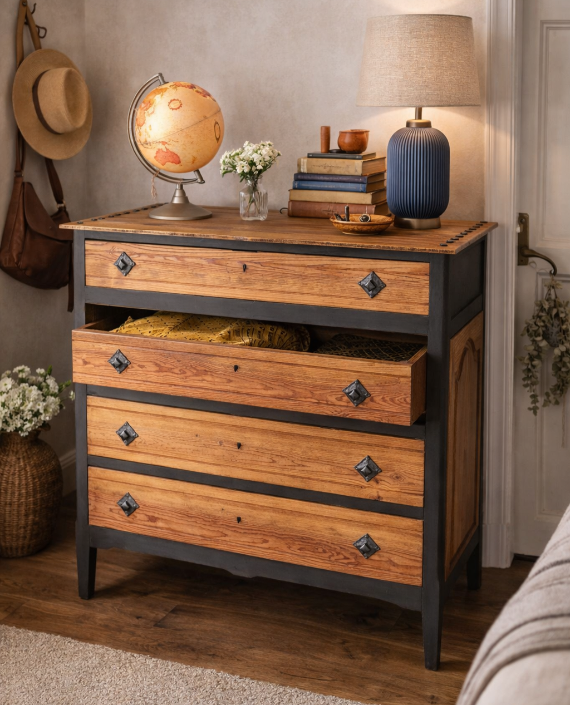
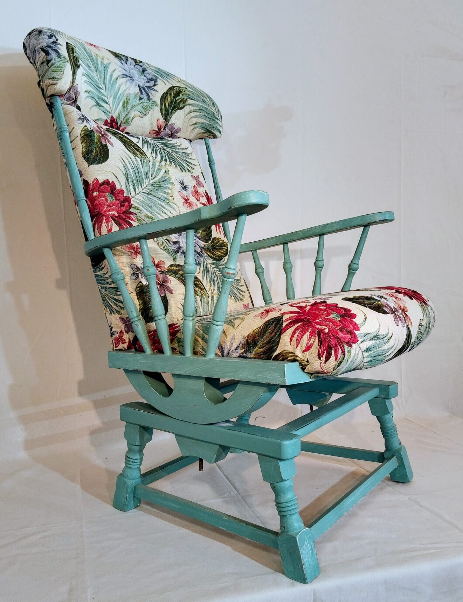
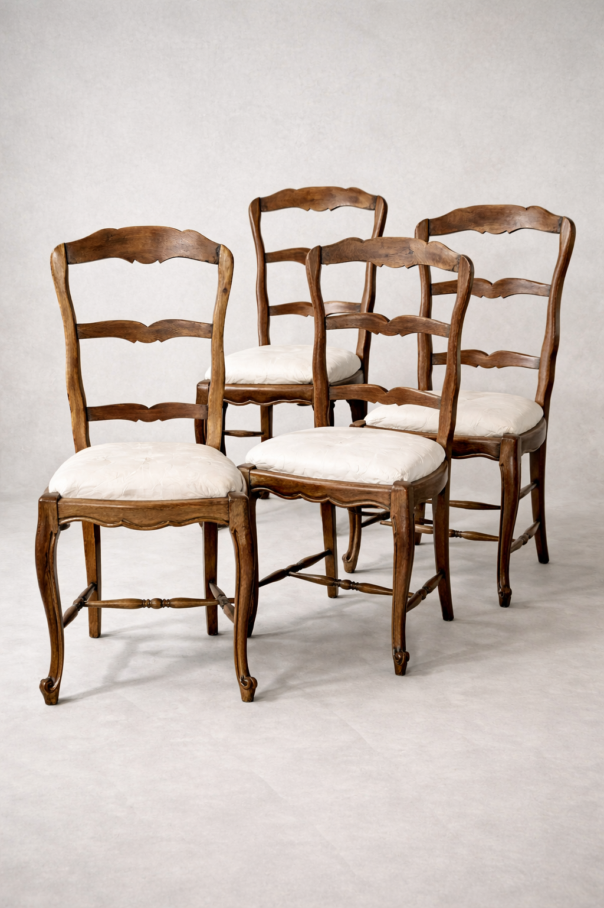
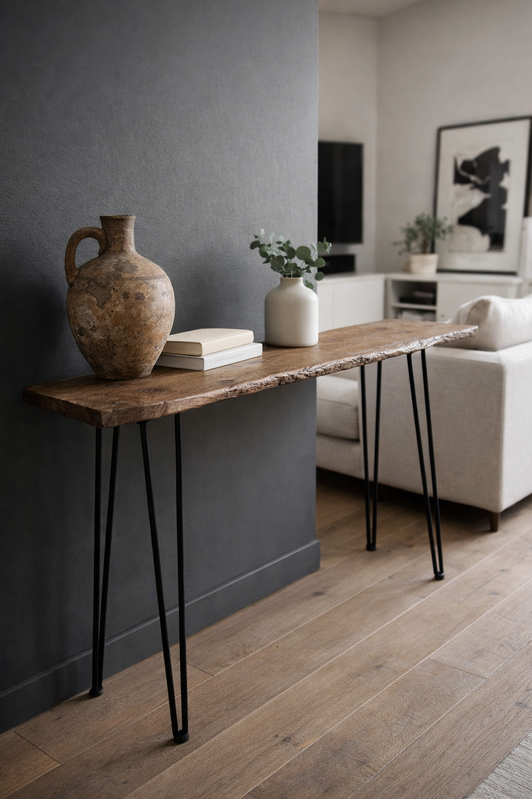
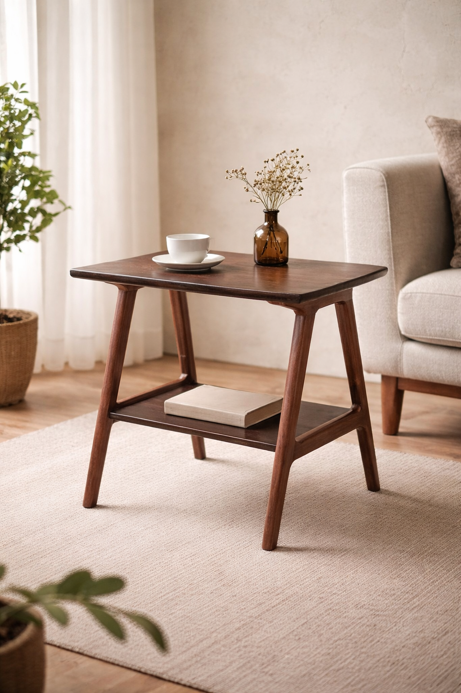
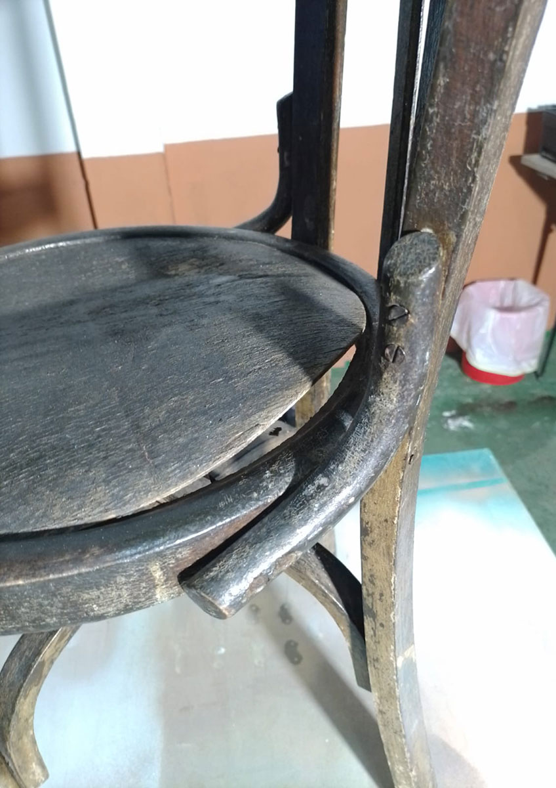
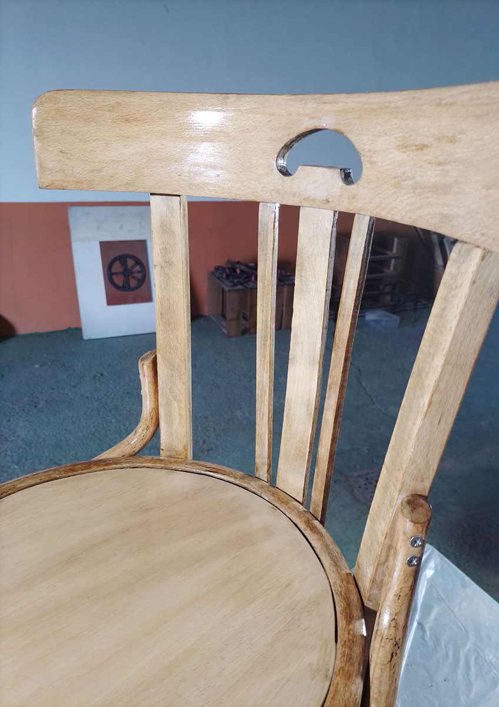

Taller de restauración con tienda de piezas únicas
Rescatamos muebles antiguos y los devolvemos a la vida en nuestro taller. Cada pieza es única: cuando se vende, no hay otra igual.

Recién salidos del taller

Tapizado de motivos florales

Respaldo escalera · Rural

Textura visible · Madera natural

Madera maciza · Escandinava


Cada pieza, una sola vez
No vendemos reproducciones ni muebles "envejecidos". Cada pieza de la tienda es un original recuperado, desmontado, tratado y devuelto a la vida en nuestro taller.
Explora la tienda
La garantía es el taller
Buscamos muebles originales con buena madera y buena historia. Solo entra al taller lo que merece una segunda vida.
Desmontaje, tratamiento de la madera, refuerzo de la estructura y acabados con técnicas tradicionales. Entre 40 y 120 horas por pieza.
Documentamos el proceso, fotografiamos la pieza y la publicamos en tienda. La recibes embalada y con su ficha de restauración.
Seguimos restaurando por encargo. Cuéntanos qué pieza es, mándanos unas fotos y te preparamos un presupuesto sin compromiso.
Solo hay una de cada
Publicamos las novedades cada jueves. Suscríbete y velas antes de que salgan en redes.